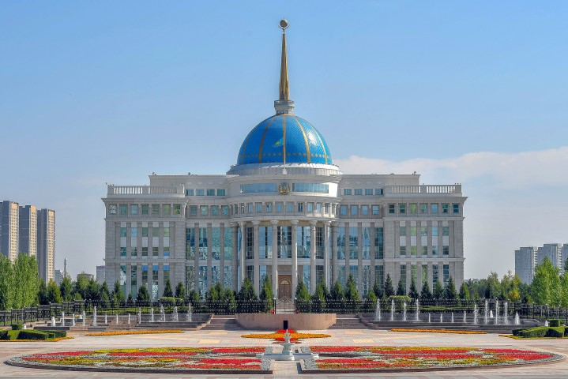

City Gallery
1 / 6
2 / 6
3 / 6
4 / 6

5 / 6
6 / 6

Nur-Sultan is the capital of Kazakhstan and its cultural center. This city surprises the visitors with its cosmic views.
It is worth visiting for everyone who loves modern architecture and wants to understand the spirit of Kazakhstan. Since it was declared the future capital of Kazakhstan and replaced Almaty by
President Nazarbayev in 1997,
this small provincial city, known for its "cold" winters, has "experienced" explosive growth and has become the second largest in the country.
Nur-Sultan is located in the north-east of the country on the banks of the Ishim River. The city was designed by renowned architects using the most innovative civil engineering techniques.
The left bank of Nur-Sultan is built up from scratch with magnificent buildings, and the cozy atmosphere of the past reigns on the right bank.
According to legend, Baiterek is the tree of life to which the sacred bird Samruk strives. She takes refuge in its high crown to lay the golden egg - the Sun, which gives life and hope. Meanwhile, the hungry dragon Aydahar hide at the roots of the tree, wanting to eat the egg. This is how the eternal struggle between good and evil is presented.
Khan Shatyr is a new symbol of the capital of Kazakhstan. Designed by the famous British architect Lord Norman Foster, Khan Shatyr is the largest tent-like building in the world, as well as the largest shopping center in Kazakhstan and has a unique appearance that attracts many tourists each year.
The Nur Alem pavilion is the largest spherical building in the world and one of the brightest sights of the capital of Kazakhstan. Nur Alem was built as the central pavilion of the world exhibition EXPO-2017 "Energy of the Future". The concept of construction was based on the idea of “the last drop of oil before the beginning of the era of green technologies.”
| How to get There | |
|---|---|
|
Air Astana is the national air carrier of Kazakhstan, based in Almaty.
If you are already in another city of Kazakhstan, you can get to Almaty
by train. |
There are plenty of
bus
routes for tourists to go anywhere for cheap price in the city
of
Almaty.
A walk allows you to immerse yourself in the pleasure of traveling from one
point to another. |